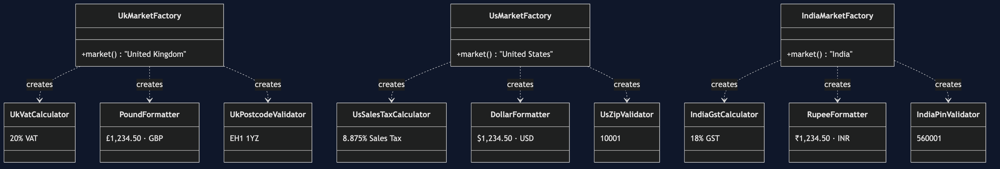

Abstract Factory Pattern — Class Diagram
Shows the static structure: CheckoutService holds one MarketFactory and asks it for three products. Each concrete factory returns the three that belong to its market, so a mismatched set cannot be assembled.
Two pictures, because there are two things to see. The first is the shape of the pattern; the second is what the families actually contain.
1. The roles

2. The three families
Every concrete factory builds one complete row. Nine classes, three families, and no arrow between the columns.


The columns line up: every factory produces one tax calculator, one currency formatter and one address validator, and they all implement the same three interfaces.
TaxCalculator | CurrencyFormatter | AddressValidator | |
|---|---|---|---|
UkMarketFactory | UkVatCalculator | PoundFormatter | UkPostcodeValidator |
UsMarketFactory | UsSalesTaxCalculator | DollarFormatter | UsZipValidator |
IndiaMarketFactory | IndiaGstCalculator | RupeeFormatter | IndiaPinValidator |
Notes
MarketFactoryis the abstract factory. It declares one creation method per product kind — three here — and nothing else. It is the only typeCheckoutServiceneeds in order to build a whole market's worth of behaviour.UkMarketFactory,UsMarketFactoryandIndiaMarketFactoryare the concrete factories. Each names three classes, and those three lines are the only place in the project where a market's pieces are chosen.TaxCalculator,CurrencyFormatterandAddressValidatorare the abstract products — three separate interfaces, which is what distinguishes this pattern from Factory Method's single product type.- The nine classes in the second picture are the concrete products. Read the table by column and you see three independent hierarchies; read it by row and you see three families. The pattern is about the rows.
- Follow any
createsarrow backwards and you land on exactly one factory. There is no path by whichUkVatCalculatorandUsZipValidatorcan end up in the sameCheckoutService— not because of a check, but because no code exists that could do it. CheckoutServicenames no market and no product class. Search it for "UK", "US" or "India" and you find nothing; it works entirely through the three product interfaces.OrderandQuoteare immutablerecordvalue objects.Quoteholds already-formatted strings, so the currency decision made by the factory survives all the way out to the caller.- Compare with
../../factory-method-pattern/docs/class-diagram.md. There, one creator produced one product type through inheritance. Here, one factory produces three product types that must agree with each other. Factory Method answers "which one?"; Abstract Factory answers "which set?".